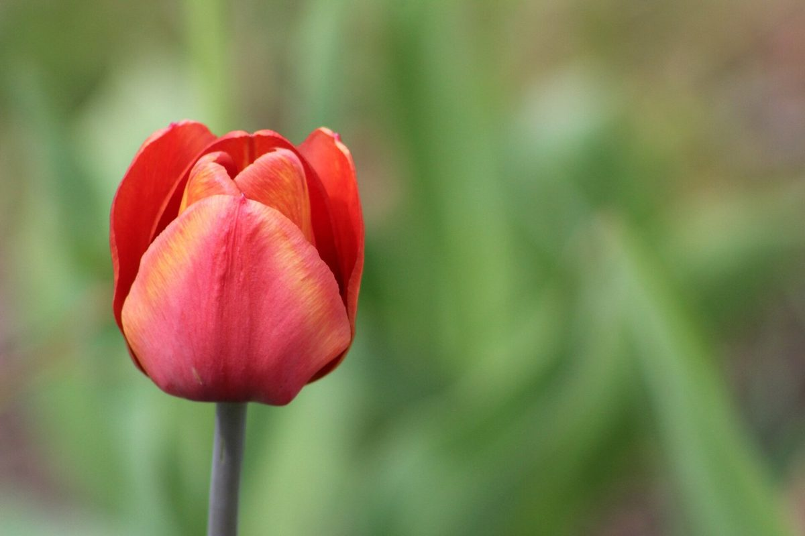
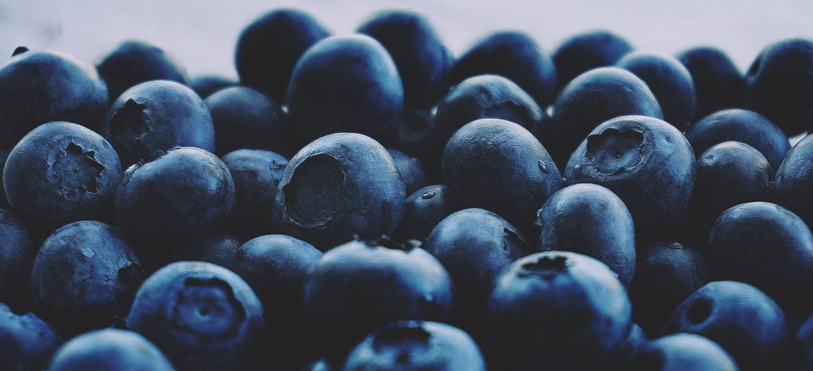

①三つの声(イメージ例)
ここに並ぶ三件は制作側の創作で、実在のお客様の投稿ではありません。
- イメージ例
Instagramをのぞいてみたいです。行ってみたいお店のひとつです。
想像した声 - イメージ例
写真を眺めるだけでも楽しみです。投稿の更新に期待しています。
想像した声 - イメージ例
公開されたら、ゆっくり読んでみたいです。
想像した声




写真はイメージです(お店の写真ではありません)
声を受けとる小さな穴のように、ことばを置くページです。
ここに並ぶ三件は制作側の創作で、実在のお客様の投稿ではありません。
Instagramをのぞいてみたいです。行ってみたいお店のひとつです。
想像した声写真を眺めるだけでも楽しみです。投稿の更新に期待しています。
想像した声公開されたら、ゆっくり読んでみたいです。
想像した声

写真はイメージです(お店の写真ではありません)